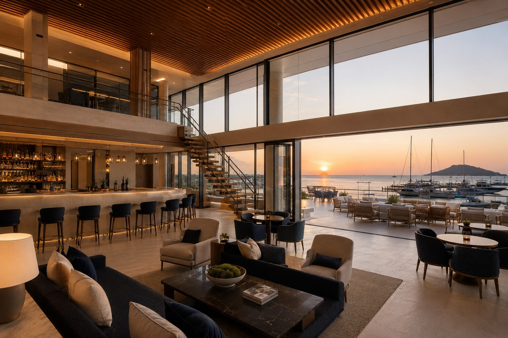
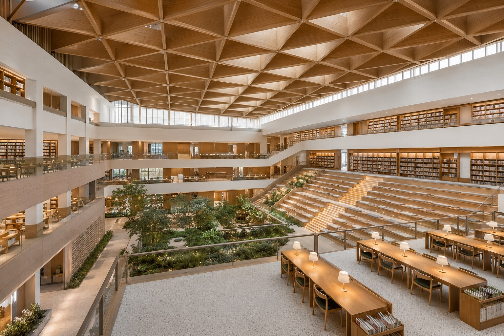

SELECTED HOSPITALITY / 12
다대포 마리나 클럽DADAEPO MARINA CLUB
마리나의 수평선과 클럽의 환대 경험을 연결한 대형 워터프런트 시설.
VIEW PROJECT12PROJECT OVERVIEW
바다를 클럽의 가장 가까운 일상으로 들이다.
밝은 석회석과 티크, 딥 네이비와 새틴 니켈로 절제된 해양의 인상을 만들었습니다. 복층 그레이트 룸과 멤버 라운지, 다이닝, 이벤트 홀과 스파가 넓은 테라스를 통해 마리나와 직접 이어집니다.
PROJECT GALLERY
공간의 장면들
